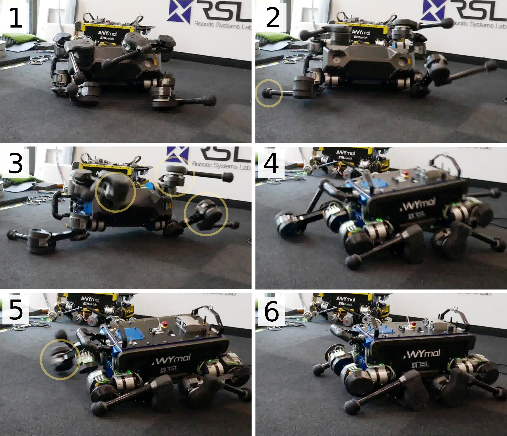
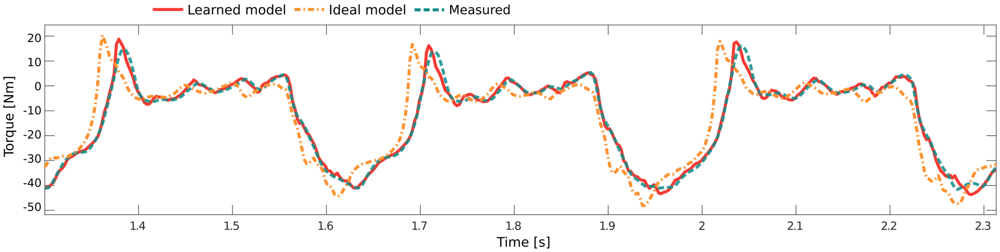
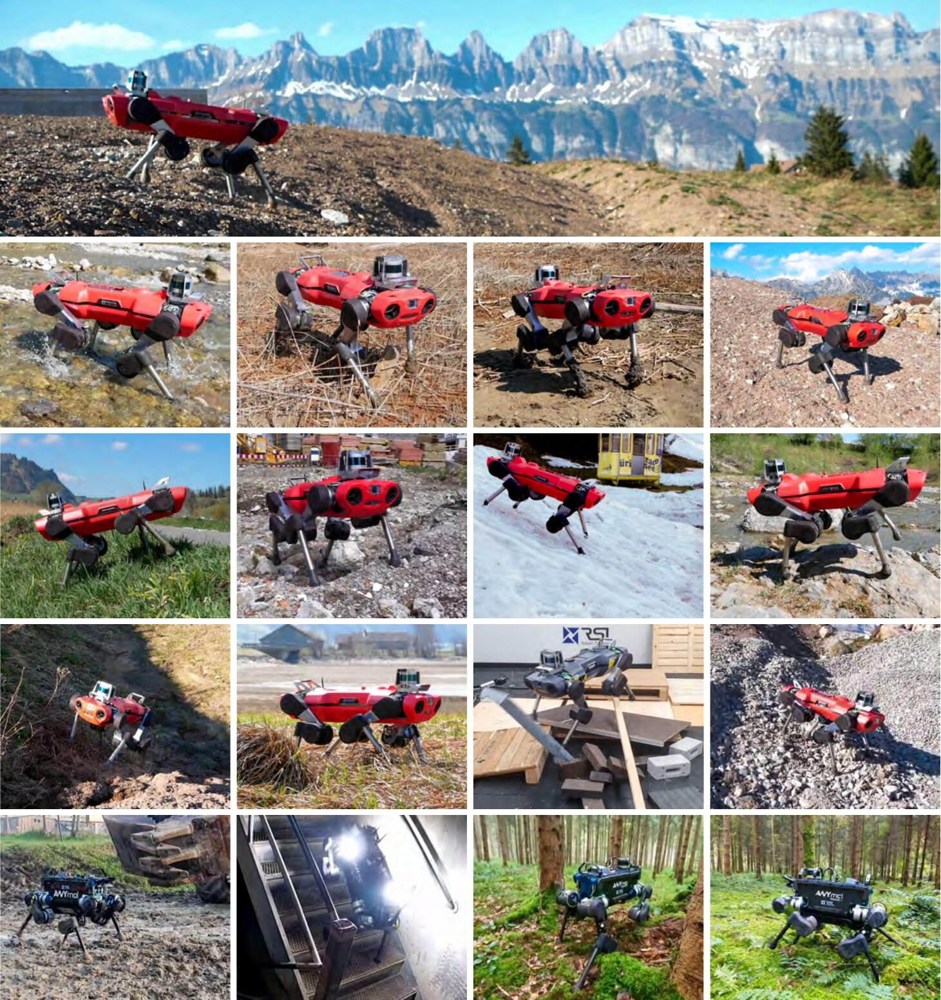
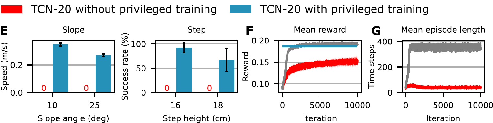
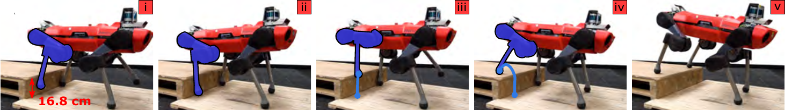
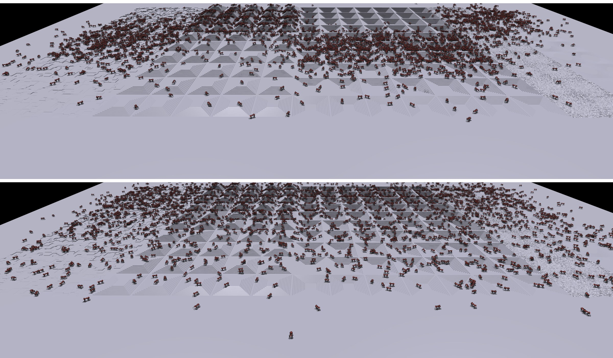
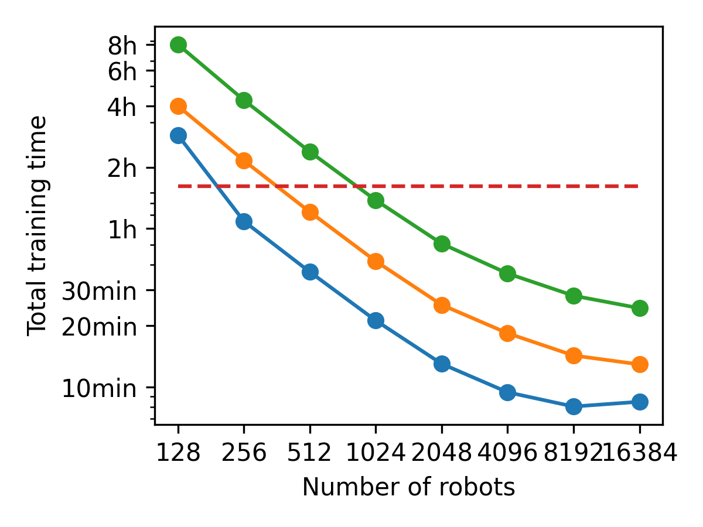

具身智能中的强化学习 · 01 上
仿真里练
上集：先把强化学习讲清楚，再看 ETH 的机器狗怎么在仿真里练、直接上真机
可lip
00强化学习
强化学习：不给答案，只给分数
监督学习
supervised learning
给标准答案
学：输入 → 答案
模仿学习
imitation learning
给示范
学：照着人做
强化学习
reinforcement learning · RL
只给分数，自己试
学：怎么做，总分最高
00强化学习
一个循环：看状态、出动作、拿奖励，再改策略
00全景
机器人分三层：RL 在每层的成熟度差很多
00路线图
具身 RL 路线图：三期讲完，先讲第一期
第一期本期 · 先讲
仿真里练
练什么身体：腿足、人形、灵巧手
在哪练仿真里练，零样本上真机
代表ANYmal 2019 · legged_gym 2021 · BeyondMimic 2025
现在运动控制：已是工业标配
留下手去抓东西、叠衣服难仿得多，模型换成 VLA 大模型
→
第二期
VLA 的 R1 时刻
练什么VLA 大模型：先模仿，再 RL
在哪练仿真 + 世界模型，不碰真机
代表SimpleVLA-RL · πRL · RISE（2025–26）
现在操作：最后一公里，最热
留下仿真里分数刷到九十多，上真机掉一大截
→
第三期
上真机
练什么小策略 → VLA
在哪练真机上练，人在旁边纠正
代表QT-Opt 2018 · HIL-SERL 2024 · RL Token 2026
现在开始进产线
收尾RL 是不是具身的下一步 · AI 自己做 RL
00RL 基础
先讲第一期：从 RL 的基本概念开始
刚讲完
RL 是什么 + 路线图
只给分数、自己试；三层里运动控制最成熟，第一期先讲它
→
接下来
RL 基础
先看一张 PPO 训练全景图，再拆成五步一步一步讲：
1 采样rollout（探索、奖励） 2 回报return（折扣）
3 价值value 4 优势advantage 5 更新update（PPO）
最后用一个生活里的例子串一遍
为什么接着讲后面每一篇论文，都建立在这几个概念上
RL 基础具身难点ETH 四足域随机化奖励人形现状
00RL 基础
PPO 训练全景：两个网络，五步一轮
强化学习最终要的就是中间这个目标：一局里所有奖励打折加起来，平均越大越好
策略网络看状态，给每个动作一个概率，按概率抽一个；环境执行，返回新状态和奖励
1 采样：这样转很多圈，每一步的状态、动作、奖励，还有当时的概率，都记下来
2 回报：每一步往后的奖励，越远打折越多，加起来就是这一步的回报 G
3 价值：第二个网络估「这个状态平时能拿多少」V(s)；它自己拿 G 当答案来学
4 优势：A = G − V(s)，回报减预期——这一步比平时好，还是比平时差
5 更新：按 PPO 的目标改策略——A 为正，概率调高；A 为负，调低；每次最多改 20%
改完，这批数据扔掉，用新策略再采下一批：两个网络，五步一轮，转几百到几千轮
00RL 基础
五步一轮：先在环境里跑一批，再拿这批数据算
00RL 基础
1 采样rollout2 回报return3 价值value4 优势advantage5 更新update
策略出的是概率：按概率抽一个动作，这就是探索
00RL 基础
1 采样rollout2 回报return3 价值value4 优势advantage5 更新update
奖励reward：每一步打一个分，怎么打是人定的
00RL 基础
1 采样rollout2 回报return3 价值value4 优势advantage5 更新update
回报return：一个动作好不好，要看它之后所有的奖励
00RL 基础
1 采样rollout2 回报return3 价值value4 优势advantage5 更新update
折扣discount：越远的奖励，打折越多
00RL 基础
1 采样rollout2 回报return3 价值value4 优势advantage5 更新update
价值value：这个状态下，平时能拿多少回报
00RL 基础
1 采样rollout2 回报return3 价值value4 优势advantage5 更新update
优势advantage：这一次比平时好多少
00RL 基础
1 采样rollout2 回报return3 价值value4 优势advantage5 更新update
PPO 的目标：按优势改概率，每次最多改 20%
00RL 基础
1 采样rollout2 回报return3 价值value4 优势advantage5 更新update
这批数据：用完就扔，还是存起来反复用
00RL 基础
一个例子串起来：新骑手送外卖
| 骑手 | RL | 机器人 |
|---|
| 他的跑法 | 策略policy | 神经网络 |
| 一单：取餐 → 送达 | 一局episode | 摔倒或时间到 |
| 在哪、几点、堵不堵 | 状态state | 身体、关节的读数 |
| 路口往哪拐 | 动作action | 关节的目标角度 |
| 每分钟 −1，投诉扣大笔 | 奖励reward | 人写的几项打分 |
| 这一单的总分 | 回报return | 往后看约 2 秒 |
| 偶尔试条小路 | 探索exploration | 动作带随机 |
| 导航：还要 20 分钟 | 价值value | 价值网络 critic |
| 20 − 5 − 12 = +3 | 优势advantage | A = G − V |
| 小路多走一点，不全改 | 更新（PPO）update | 每次 0.8–1.2 倍 |
| 复盘完今天就翻篇 | on-policy | 用完就扔 |
00具身难点
RL 的概念讲完了，放到机器人身上的难点
刚讲完
RL 基础
PPO 全景 · 五步一轮
采样、回报、价值、优势、更新
再用骑手的例子串一遍
→
接下来
具身 RL 的难点
和大模型的 RL 对比 · 让四条腿走起来的三种做法 · 为什么只能去仿真里练
为什么接着讲机器人每秒 50 次决定、做错不能撤回，这决定了后面所有工作都要先去仿真里练
RL 基础具身难点ETH 四足域随机化奖励人形现状
00具身 RL
和大模型的 RL 比：每秒 50 次决定，不能撤回
大模型DeepSeek-R1 这类
动作一段文字回答
打分答完，对一次答案
做错重新生成，没有代价
环境一道题，不会变
同一个框架状态state
动作action
奖励reward
机器人机器狗学走路
动作12 个关节角，每秒 50 次
打分每一步都在打
做错摔了、撞了，不能撤回
环境每一步都被自己改变
00具身 RL
让四条腿走起来：三种做法
| 做法 | 怎么做 | 难在哪 |
|---|
| 传统控制model-based control | 专家写简化的物理模型，再一个个调参数 | 每个新动作要专家调几个月 |
| 模仿学习imitation learning | 人做示范，模型照着学 | 四条腿每个关节怎么用力，人示范不出来；学不过示范的人 |
| 强化学习reinforcement learning | 只定目标和奖励，怎么用力自己试 | 要试几百万次 |
00为什么仿真
试的次数太多，只能去仿真里练
ANYMAL 机器狗 · 2019
9 天
训 4 小时，相当于在仿真里走了 9 天
OPENAI 五指手 · 2018
100 年
训约 50 小时，相当于在仿真里练了 100 年
00为什么仿真
仿真和真机不一样：这期讲两件事
仿真 ≠ 真机sim-to-real gap
电机指令到力矩，很难仿
摩擦、质量每台都不一样
传感器噪声、延迟
地形泥、雪、草、水
①怎么跨过这个差距
把仿真调准system identification用真机数据学电机 · ETH 2019
域随机化domain randomization每局随机改参数 · OpenAI 2017–2019
师生蒸馏teacher-student老师看真值，学生只看传感器 · ETH 2020
②怎么学得快、学得像
大规模并行massively parallel一张 GPU 上几千只 · ETH 2021
跟踪人类动作motion trackingDeepMimic 2018 → 人形 2025
01ETH 四足
仿真和真机不一样：第一个跨过去的是 ETH
刚讲完
为什么去仿真
试的次数太多，只能去仿真里练；可仿真和真机不一样
→
接下来
ETH 四足
苏黎世联邦理工的 ANYmal：2019 把电机调准 · 2020 师生蒸馏 · 2021 几千只并行
为什么接着讲五招里有三招，最早都是 ETH 在复杂四足上做成的
RL 基础具身难点ETH 四足域随机化奖励人形现状
01ETH 四足
2019 年前靠模型控制，之后 RL 慢慢成了标配
01ETH 四足
同一台机器：换成 RL，都跑得更快
01ETH 四足
ETH 四足：仿真里练、真机直接用，从这里做成
苏黎世联邦理工 · 机器人系统实验室（RSL）· Marco Hutter 组 · ANYmal 系列
01ETH 四足
Hwangbo 2019：仿真里练完，直接上真机
机构 · 发表
ETH + Intel
Science Robotics 2019 · 机器人 ANYmal：32 kg，12 个关节
输入 → 输出
≈97 → 12
身体姿态和速度、关节角和速度、关节历史、上一步动作、速度指令 → 12 个关节目标角 · 每秒 200 次
真机结果
1.5 m/s，比之前纪录快 25%
9 个随机姿势摔倒，全部 3 秒内翻身

真机：摔倒后自己翻身 · 1 → 6
01ETH 四足
四步配方：最难仿的电机，用真机数据学进仿真
① 刚体建模 + 随机化 ② 用真机数据训执行器网络actuator network ③ 在仿真里做 RL ④ 直接部署到真机zero-shot
01ETH 四足
1 刚体模型2 电机模型3 仿真里练4 上真机
执行器网络怎么训：6 个数进，1 个力矩出
采数据 · 真机上
< 4 分钟，100 多万条
脚走正弦轨迹：幅度 5–10 cm、频率 1–25 Hz 一直变，人在旁边推
12 个关节同时记，每秒 400 次
九成拿来训，一成留着验证
01ETH 四足
1 刚体模型2 电机模型3 仿真里练4 上真机
执行器网络：预测贴着实测，换掉它一步都迈不出

执行器网络预测真机实测理想电机模型
验证集平均误差
0.74 Nm
理想电机模型 3.55 Nm · 力矩测量本身的分辨率 0.2 Nm
拿真走路时的数据测
0.97 Nm
理想电机模型 5.74 Nm
换成别的电机模型
迈不出一步
理想电机、人调一周多的解析模型 · 训出的策略上真机腿剧烈抖动
01ETH 四足
1 刚体模型2 电机模型3 仿真里练4 上真机
要练什么：三个任务，各训一个网络
任务一 · 最主要的
跟着指令走
指令就是 3 个数：往前多快、往旁边多快、转弯多快 · 人拿摇杆或者上层的导航程序实时给，随时能变
训练：每局随机给一个 · 前后 ±1 m/s、左右 ±0.4 m/s、转向 ±1.2 rad/s
测试：每 2 秒换一个，连测 30 秒
任务二
跑得快
指令只给往前，最高 1.6 m/s · 真机跑到 1.5 m/s，之前的纪录 1.2
任务三
摔倒后翻身
没有速度指令 · 目标写在奖励里：身体转正、四条腿收到预定姿势
起点：从 1 米高、随机姿势摔下去
策略只管「怎么走」，「往哪走」听指令的 · 一个网络只会一种技能，换任务就换一组参数 · 后面几页讲的都是任务一
01ETH 四足
1 刚体模型2 电机模型3 仿真里练4 上真机
状态和动作：97 个数进，12 个目标角出
01ETH 四足
1 刚体模型2 电机模型3 仿真里练4 上真机
整个仿真怎么训：里圈攒经验，外圈改策略
还是开头那个循环：策略是要训的网络，环境在这篇里就是仿真器——执行器网络 + 刚体仿真
① 状态：每 5 毫秒，策略看一眼 97 个数——指令 3 个，身体、关节，还有短期记忆
② 动作：输出 12 个数，每个关节一个；目标角 = 站立姿势 + 0.5 × 输出（膝盖：−0.8 + 0.4 = −0.4）
执行器网络：目标角 − 现在角度 = 误差；误差和速度（现在、0.01、0.02 秒前）→ 12 个力矩
刚体仿真：力矩交给它，走 2 步、每步 2.5 毫秒；这只狗的质量、质心、关节位置是随机过的
仿真给回新状态（加噪声）回到 ①；还有这一步的③ 奖励，8 项打分——不给策略看，记下来训练用
一局：一圈一圈转，最多 6 秒，摔倒就提前结束；新的一局换随机指令、随机起点
攒一批：40 个仿真环境同时跑，每一步的状态、动作、奖励都记下来，攒够约 10 万步
算优势：每局从最后一步往前倒着加出回报；价值网络估预期；回报 − 预期 = 优势
TRPO 改策略：比预期好的动作概率调高一点，每次只许改一点；课程系数涨一点，数据扔掉，再攒下一批
一共约 2.5 亿步、4 小时，相当于仿真里 9 天；训完只把策略网络带上真机
01ETH 四足
1 刚体模型2 电机模型3 仿真里练4 上真机
奖励：2 项加分、6 项扣分，摔倒扣 1 分
| 奖励项 | 算的是什么 | 权重 × Δt |
|---|
| 加分 · 任务本身 · tracking |
| 跟上速度 | 身体速度和指令差多少，过钟形函数 | +10 |
| 跟上转向 | 转向角速度和指令差多少，过钟形函数 | +6 |
| 扣分 · 都乘课程系数 kc · penalty |
| 费力 | 关节力矩的平方 | −0.005 |
| 关节转太快 | 关节速度的平方 | −0.03 |
| 抬脚不够高 | 腾空的脚离地不到 7 cm 还在往前挪 | −0.1 |
| 脚打滑 | 着地的脚还在水平滑 | −2.0 |
| 身体歪 | 重力方向偏离竖直 | −0.4 |
| 不平滑 | 相邻两步力矩差的平方 | −0.5 |
| 摔倒 |
| 关节超限 / 身体碰地 | 这一局到此结束 | −1 |
01ETH 四足
1 刚体模型2 电机模型3 仿真里练4 上真机
一局怎么跑：指令、起点、机器人都随机
速度指令command · 每局随机一个
前后 ±1 m/s
左右 ±0.4 m/s · 转向 ±1.2 rad/s · 一局里不变
起点initial state
一半接着跑
一半从之前跑过的轨迹里接着来，一半随机姿势和速度 · 见过的情况更杂
一局多长episode
6 秒
关节超限或身体碰地
就提前结束，扣 1 分
机器人参数dynamics randomization
30 只不一样的 ANYmal
质心 ±2 cm、连杆质量 ±15%、关节位置 ±2 cm · CAD 图纸本身约有 20% 误差
观测噪声observation noise
±0.5 rad/s
加在关节速度上 · 真机上速度是位置差分出来的，很吵；身体速度也加
地面terrain
平地
实验室平地 · 这一篇还不看路，也不练台阶
01ETH 四足
1 刚体模型2 电机模型3 仿真里练4 上真机
课程：先学会走，再慢慢收紧扣分
问题
站着不动
扣分一开始就算满：一动就扣，站着最划算 · 扣得太轻：步态很怪
做法
× kc
除了跟速度，所有扣分、还有起点的扰动都乘 kc · 从 0.3 开始，一轮一轮涨到 1
效果
先走，再走好
先学会跟着指令走，再慢慢变得省力、平稳、不打滑
01ETH 四足
1 刚体模型2 电机模型3 仿真里练4 上真机
代码里的一步：5 毫秒里发生了什么
开源代码 · ANYmal_minimal.hpp 的 step 函数（简化）
void step(action) { target = nominal + 0.5 * action; // ① for (int i = 0; i < 2; i++) { // ② hist.push(target - q, dq); // ③ tau = actuatorNet(hist) * 20; // ④ tau = clip(tau, -40, 40); integrateOneTimeStep(tau); // ⑤ cost += calculateCost(); // ⑥ if (isTerminalState()) break; // ⑦ } obs = getState() + noise; // ⑧}
1
目标角站立姿势 + 0.5 × 网络输出的 12 个数
2
走 2 个仿真步策略每 5 毫秒出一次，仿真每步 2.5 毫秒
4
执行器网络12 个关节各算一次力矩，最多 40 Nm
01ETH 四足
1 刚体模型2 电机模型3 仿真里练4 上真机
价值网络：估「本来能拿多少」，算出优势
价值网络：和策略吃同样的 97 个数，只输出 1 个数——从这里开始，预计还能拿多少分（预期 value）
实际回报：一局跑完，把这一步之后记下来的奖励倒着加、越远打折越多，比如得到 1.3
优势 = 回报 − 预期：1.3 − 1.0 = +0.3，比预期好，交给 TRPO 把这个动作的概率调高
价值网络自己也要学：拿实际回报当答案，让预期往它靠；每一轮和策略一起更新，上真机不带它
01ETH 四足
1 刚体模型2 电机模型3 仿真里练4 上真机
训练流程：一轮一轮转，和 PPO 是一个思路
规模
≈2.5 亿步
约 4 小时 = 仿真里 9 天 · 翻身：11 小时 = 79 天
算力
1 台普通电脑
1 个 CPU + 1 张 GPU · 混合仿真器每秒约 50 万步，实时的 1000 倍
TRPO 和 PPO
同一个思路
TRPO（Trust Region Policy Optimization，2015）用 KL 散度KL divergence限制每次改多少 · PPO（2017）换成简单的裁剪 clip，0.8–1.2
01ETH 四足
1 刚体模型2 电机模型3 仿真里练4 上真机
上真机：只带一个小网络，每秒算 200 次
不上机的
执行器网络 · 价值网络
还有仿真器和 TRPO，都只在训练时用 · 执行器网络只是仿真里的「电机」，真机有真电机
真机表现
第 2 天拿到全部结果
翻身第一次试就成功 · 三个月不改参数照样用，换了弹簧硬 3 倍的新驱动器也行
01ETH 四足
Lee 2020：只靠关节和 IMU，走进泥地雪地
机构 · 发表
ETH + Intel
Science Robotics 2020 · ANYmal B、C 两代机器人，同一个控制器
输入 → 输出
关节 + IMU
不用相机、不用激光雷达，不看路 → 每条腿的节奏和落脚位置
真机结果
4 × 60 分钟，零失败
DARPA 地下挑战赛 · 仿真里只有山丘、台阶、楼梯，没仿过泥、雪、水

真机：雪坡、碎石、溪流、泥地、密林
01ETH 四足
师生蒸馏：老师看特权信息，学生只看传感器
① STEP 1 · 老师
特权信息
地形、摩擦、接触力、外力等 71 维 + 身体状态 · 用 RL 训
② STEP 2 · 学生
2 秒 身体感觉
只看关节和 IMU 的历史 · 模仿老师的动作和中间特征
01ETH 四足
不用老师直接训学生：坡和台阶上都是 0

不用老师，直接 RL 训学生先训老师，再教学生
自适应地形课程
50%–90%
只挑通过率在这个区间的地形练 · 策略变强，地形自动变难
没人专门教 · 长出来的反射

前腿撞到 16.8 cm 的台阶，下一步自己把腿抬高跨过去
01ETH 四足
legged_gym：4096 只一起练，20 分钟学会走
ETH + NVIDIA · CoRL 2021 · ≈156 维状态 → 12 个关节目标角，每秒 50 次
01ETH 四足
游戏式课程自动调难度，并行约 4000 只最划算

游戏式课程：都从最近一排最简单的地形出发，走出自己那块就升级，走不到一半就降级 · 上：第 500 次更新；下：第 1000 次

机器人数量 vs 总训练时间 · 到约 4000 只前几乎线性变快
4.9 万 / 批9.8 万 / 批（实际用的）19.7 万 / 批100 万 / 批基准
01ETH 四足
仿真里都用 PPO：它本来就是 N 个一起跑 T 步
LEGGED_GYM 的一批
98,304
N = 4096 只 × T = 24 步 · 每批更新 5 轮，用完就扔
仿真里的数据
几乎免费
用完就扔也不心疼 · 瓶颈是等多久
OpenAI 五指手论文原话
稳，超参少
PPO scales up easily and requires little hyperparameter tuning
挑战者 · FastSAC 2025
15 分钟
off-policy · 一张 RTX 4090 训出人形走路
01ETH 四足
人手写的奖励：9 项，五年几乎没变
92% 的 RL 研究者说，奖励靠手动试错来设计
| 奖励项 | 算的是什么 | legged_gym · 2021 | Isaac Lab 3.0 · 2026 |
|---|
| 加分 |
| 跟上速度 | 摇杆给的前进、侧移速度 | +1.0 | +1.0 |
| 跟上转向 | 摇杆给的转向角速度 | +0.5 | +0.5 |
| 迈大步 | 脚腾空超过 0.5 秒，落地时加分 | +1.0 | +0.125 |
| 扣分 |
| 上下颠 | 身体竖直方向的速度 | −2.0 | −2.0 |
| 前后左右晃 | 身体横滚、俯仰的角速度 | −0.05 | −0.05 |
| 费力 | 关节力矩的平方 | −1×10−5 | −1×10−5 |
| 关节抖 | 关节加速度的平方 | −2.5×10−7 | −2.5×10−7 |
| 腿蹭地 | 大腿、小腿碰到东西 | −1.0 | −1.0 |
| 动作不平滑 | 相邻两步动作之差 | −0.01 | −0.01 |
01ETH 四足
ETH 之后：一个策略走废墟，配方搬上人形
Parkour in the Wild2025 · Rudin 等
9 个专家蒸馏成一个只看深度相机的策略，再在真实废墟扫描上 RL 微调
没见过的废墟扫描（仿真测）：14.9% → 94.9%
羽毛球2025 · Science Robotics腿和机械臂一个策略，和人对打
一回合最多连续 10 拍
爬梯子2024钩子脚 + 师生蒸馏
4 秒爬上 90° 梯子，真机 90%
人形荡单杠2026 · 预印本3 个老师蒸馏成一个看激光雷达的学生
真机 15 次，14 次完成全程
01ETH 四足
策略只在仿真里练，但仿真是拿真机数据调准的
仿真里策略
训练策略的每一个参数，都只在仿真里练
部署上真机直接用，不再训练、不微调
算法TRPO → PPO，几乎没变
来自真机和人仿真本身
电机执行器网络，用真机数据训
奖励人调：走路约 2 天，翻身约 1 周
噪声观测噪声的大小，按真机实测
地形后来：真实废墟的 3D 扫描
01上集收尾
上集小结：RL 怎么学，ETH 怎么搬上真机
下集
人形怎么学会
跳舞翻跟头
域随机化 · 奖励谁来写 · 照着人学
DeepMimic → BeyondMimic → 一个策略跟所有动作
①RL 基础：PPO 五步一轮
1 采样rollout按概率抽动作
2 回报return往后打折加起来
3 价值 · 4 优势A = G − V
5 更新PPO每次最多改 20%
②ETH 四足：仿真里练，零样本上真机
把仿真调准执行器网络 · Hwangbo 2019
师生蒸馏老师看真值 · Lee 2020
大规模并行 + PPO4096 只、20 分钟 · legged_gym